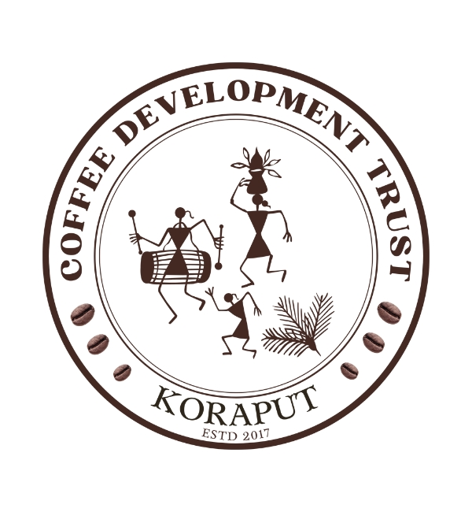
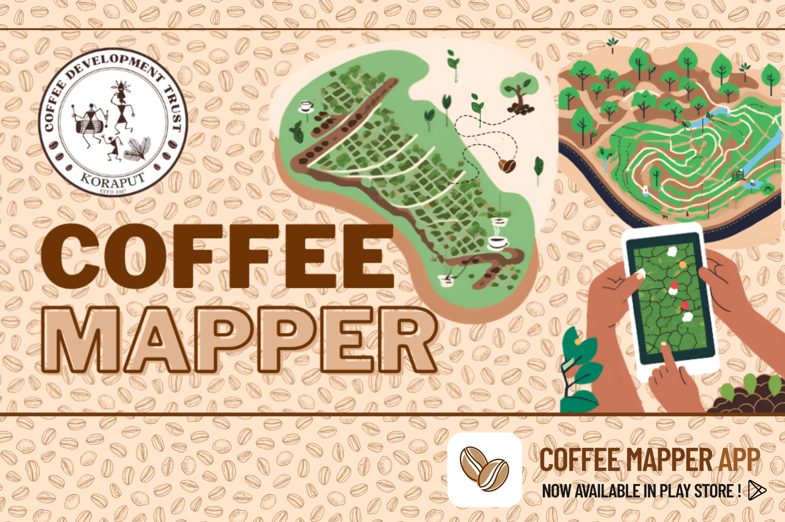
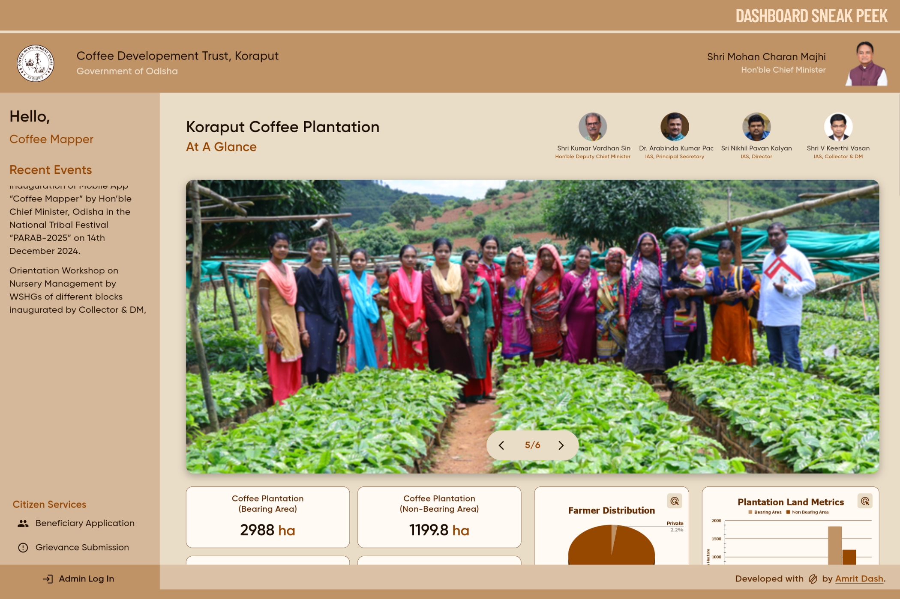
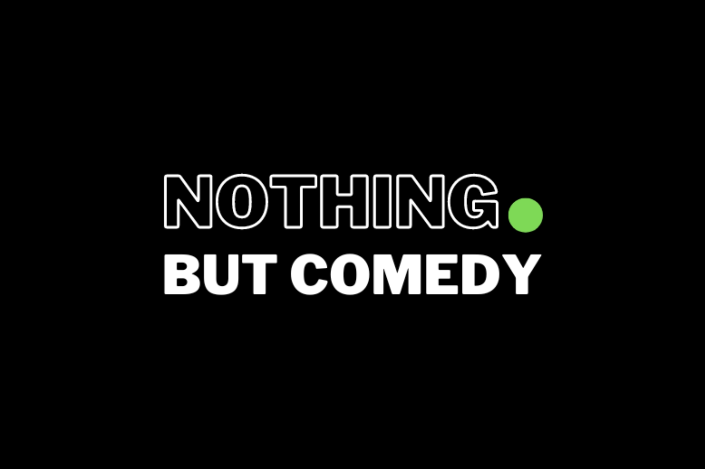
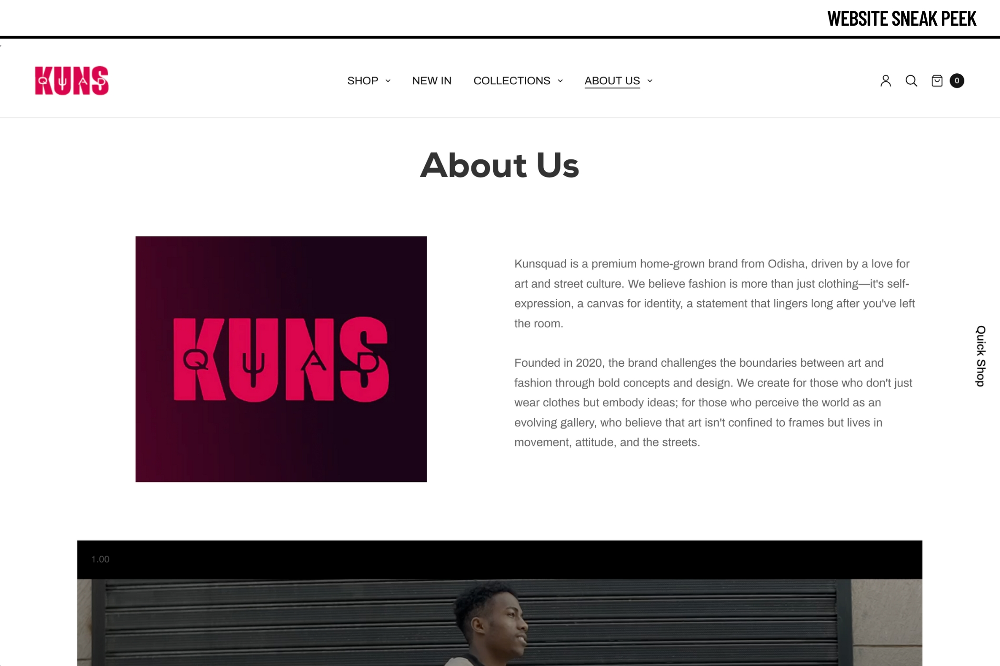
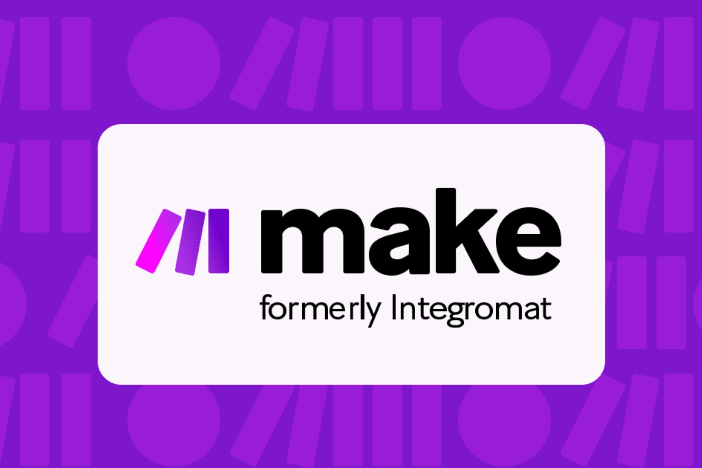
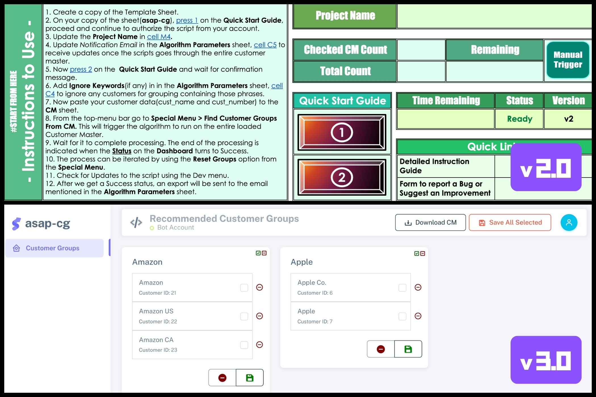

Next.js · LLM IDE
GenkiFlow IDE
A web IDE with Google Genkit AI baked in — code generation, refactoring, summarisation and a persistent browser file-system.
Open case studyAI & Automation Engineer with 5 years of experience designing end-to-end systems with Make.com, n8n, Apps Script and Flutter. Currently building automation for student onboarding, allocation and parent communication at Contour Education.
 Comic in disguise
Comic in disguise
I'm a Software Engineer with 5 years of experience implementing automation projects across consulting, SaaS and early-stage startups. I started in cash-application consulting, moved into Apps-Script automation, then went deep on Make.com, Zapier, n8n and LLM-powered agents.
Today I'm the Automation Engineer at Contour Education, driving end-to-end automation of student onboarding, class allocation, attendance tracking and parent–student communication. On the side I build Flutter apps, Shopify widgets and the occasional WhatsApp bot.
Logical thinker. Fail-first, fix-fast. Stand-up comedian. Always chasing good food and better problems.
Five years of shipping automation across consulting, startups and ed-tech — with a couple of degrees and a few standing ovations along the way.
Driving end-to-end automation of student onboarding, class allocation, attendance tracking and parent–student communication using Make.com, Zapier, n8n and Google Apps Script with Monday.com as the core CRM.
Flutter Developer at CDT Koraput (Coffee Mapper). AI Engineer at BeGig building a custom LLM chatbot with RAG. Shopify developer for Kunsquad. Built a Twilio + Apps Script WhatsApp bot to manage spot curation for a Bangalore comedy club.
Designed and shipped automation scenarios across employee onboarding, appraisal and offboarding using Make, Zapier, Apps Script and Zoho. Owned ongoing optimisation and cost-efficiency of the company's automation fabric.
Led the Apps Script Automation Projects (ASAP) initiative — building internal tools for consultants to manage projects, teams and data gathering. Tools went live company-wide.
Implemented CAA projects for Zurich Insurance, CrediQ and Heritage Crystal Clean (live in 2021–22). Managed a two-person crew to deliver CAA for Bureau Veritas. Promoted from co-op intern to FTE on PPO.
Active in developer student clubs and hackathons. Co-founded a startup in second year. Volunteer at Google Developers Group Bhubaneswar.
Secured All India Rank 1 in CTC VI, conducted by Digit — India's top tech media company.
Delivered talks and ran workshops on building voice apps with Actions on Google across colleges and developer events.
Make Automation Expert L1–L4. Google Cloud Essentials, Machine Learning APIs, Kubernetes in GCP, Build Interactive Apps with Google Assistant, PyTorch Scholarship by Udacity.
Highflyer Intern of the Quarter (Q2 2021) and Star Team Award (Q3 2021). Runners-Up at Run IO Hackathon (NIT Rourkela).
A grab-bag of automation tooling, Flutter products and side experiments. Tap any card for the full story.
A web IDE with Google Genkit AI baked in — code generation, refactoring, summarisation and a persistent browser file-system.
Open case study Flutter · Android
Flutter · Android
Android app built for the Coffee Development Trust, Koraput. Field agents track plantations and submit region-level details on the go.
Open case study
Flutter WebAdmin web app surfacing the field data — integrated map view of tracked regions and on-demand report generation.
Open case study WhatsApp · Twilio
WhatsApp · Twilio
WhatsApp bot managing spot curation for a Bangalore comedy club. Used weekly by 150+ comics to check availability.
Open case study Shopify Liquid
Shopify Liquid
Custom pages and reusable Shopify Liquid widgets for a Bhubaneswar-based startup — Figma to fully-shopped storefront.
Open case study Make · ChatGPT · Slack
Make · ChatGPT · Slack
Showcase of advanced scenarios on Make.com — DSM Bot for daily stand-up automation and Cricket Bot for engagement & predictions.
Open case study Apps Script · Firebase
Apps Script · Firebase
Apps Script tool that recommends fuzzy customer groups by revenue, region and industry — wrapped in a Firebase web UI.
Open case studyA web-based IDE that embeds Google Genkit's AI capabilities directly into the editor. Code generation, refactoring and summarisation alongside a multi-tab editor and a persistent browser-based file system for a complete, context-aware development workflow.

An Android app built for the Coffee Development Trust, Koraput. Field agents log in, track coffee plantations across the district, and submit region-level details on the go.

A web dashboard surfacing tracked regions with integrated map views. Admins generate reports of tracked plantations on demand.

A WhatsApp bot that manages spot curation for a Bangalore comedy club. Comics ping the bot weekly for slots; user base grew to 150+ comics.

Built custom pages and reusable Shopify Liquid widgets for a Bhubaneswar-based startup. Figma to a fully shopped storefront.

A showcase of advanced automation scenarios built on Make.com, Google Apps Script and various SaaS integrations. Features DSM Bot for daily-status automation and Cricket Bot for prediction & engagement.

Apps Script Automation Project that recommends fuzzy customer groups based on revenue, region and industry. Integrates with Google Sheets and ships a Firebase-hosted web UI.